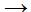

|
|
বিবর্তনের পক্ষে কোন
সাক্ষ্য প্রমাণ পাওয়া যায়নি
বিখ্যাত জীববিজ্ঞানী এবং
আধুনিক বিবর্তনবাদের অন্যতম প্রতিষ্ঠাতা থিওডসিয়াস
ডাবঝানস্কি বলেছিলেন,
'বিবর্তনের আলোকে না দেখলে
জীববিজ্ঞানের কোন কিছুরই আর
অর্থ থাকে না।'
এ কথা খুবই সত্যি। বস্তুতঃ
বিবর্তনের স্বপক্ষে প্রমাণ আজ
এতোই বেশী যে
সেগুলোকে অস্বীকার করার অর্থ অনেকটা পৃথিবীর গোলত্বকে অস্বীকার
করার
মতই হয়ে দাঁড়িয়েছে।
বিবর্তনীয় ব্যাখ্যা
ছাড়া আজকের জীববিজ্ঞানের কোন কার্যকারিতাই থাকবে না। গত
শতাব্দীতেই বিবর্তনবাদকে জীববিজ্ঞানের মূল
শাখা হিসেবে স্বীকৃতি
দেওয়া হয়েছে। ডারউইন তার বিবর্তন তত্ত্ব প্রস্তাব করছিলেন
প্রায় দেড়শো বছর আগে,
তারপর থেকেই
জেনেটিক্স,
অনুজীববিদ্যা,
জিনোমিক্সসহ
জীববিজ্ঞানের নতুন
নতুন শাখায় যত অভাবনীয় আবিষ্কার হয়েছে তার সবগুলোই এক বাক্যে
বিবর্তনবাদের পক্ষে
রায় দিয়ে যাচ্ছে।
বিবর্তনের পক্ষে অন্যতম
জোরালো প্রমাণ হল - কোন ফসিলই 'ভুল স্তরে' পাওয়া যায়নি। একবার
বিজ্ঞানী জেবি এস হালডেনকে জিজ্ঞাসা করা হয়েছিল কিভাবে
বিবর্তনকে ভুল প্রমাণ
করা যায়? উত্তরে হালডেন বলেছিলেন,
“কেউ যদি প্রিক্যাম্বরিয়ান
যুগে খরগোশের ফসিল খুঁজে পায়”।
(এ প্রসঙ্গে পড়ুন আর্কাইভে
বিবর্তন মিথ্যা-প্রতিপাদনযোগ্য নয় দাবীর
উত্তর)
অধ্যাপক রিচার্ড ডকিন্স এবং
জেরি কয়েন তাদের একটি প্রবন্ধে বলেছেন
-
সত্যি কথা বলতে কি, একটি
খাঁটি ফসিলও এখন পর্যন্ত কোন ‘ভুল’ জায়গায় পাওয়া যায়নি - যা
বিবর্তনের ধারাবাহিকতাকে ক্ষুন্ন করতে পারে। যদি এমন কোন
‘বেমানান’ ফসিল কখনও পাওয়া যেত, তাহলে এক নিমেষেই
বিবর্তনতত্ত্বের সলিল সমাধি ঘটতো।
শুধু ফসিল রেকর্ডই নয়, বরং
আজকে ডিএনএ রেকর্ড এবং তুলনামূলক বংশগতীয় বিশ্লেষণ থেকেও
সন্দেহাতীতভাবে বিবর্তনের একই সাক্ষ্যপ্রমাণ আমরা পাই।
ফসিলবিদ্যা আর জেনেটিক্সই নয় আজকে জীববিজ্ঞানের প্রায় সব শাখাই
বিবর্তনের পক্ষে অজস্র সাক্ষ্য দিয়ে আসছে।
বিবর্তনের পক্ষে যে সমস্ত
সাক্ষ্য সহজেই হাজির করা যায় তা হল : প্রাণ রাসায়নিক প্রমাণ,
কোষবিদ্যা বিষয়ক প্রমাণ, শরীরবৃত্তীয় প্রমাণ, জীবাশ্ম বা
ফসিলের প্রমাণ, সংযোগকারী জীবের প্রমাণ, ভৌগলিক বিস্তারের
প্রমাণ, তুলনামূলক অঙ্গসংস্থানের প্রমাণ, শ্রেনীকরণ সংক্রান্ত
প্রমাণ, নিষ্ক্রিয় বা বিলুপ্তপ্রায় অঙ্গের প্রমাণ ইত্যাদি। এ
ছাড়া তবে ১৯৫০ সালের পর থেকে বিবর্তনের সপক্ষে সবচেয়ে জোরালো
এবং গুরুত্বপূর্ণ প্রমাণ পাওয়া গেছে ‘আনবিক জীববিদ্যা’ এবং
সাইটোজেনেটিক্স থেকে। আধুনিক জীববিজ্ঞান, প্রত্নতত্ত্ববিজ্ঞান,
জেনেটিক্স, জিনোমিক্স এবং আনবিক জীববিদ্যার সকল শাখাতেই
বিবর্তনের পক্ষে জোরালো প্রমাণ পাওয়া গেছে।
কিছু সাক্ষ্য এখানে উল্লেখ করা হল -
-
প্রকৃতিতে ৩২০ রকমের
এমাইনো এসিড পাওয়া গেলেও দেখা গেছে প্রতিটি জীব গঠিত হয়েছে
মাত্র ২০টি এমাইনো এসিডের রকমফেরে। অর্থাৎ
একই রকমের (২০টি) এমাইনো এসিড দিয়ে সকল জীবের প্রোটিন গঠিত।
প্রোটিন অনুতে এমাইনো এসিডের আবশেষগুলোর পর্যায়ক্রমিক
বিন্যাসকে বলে এমাইনো এসিড অনুক্রম। ঠিক একই রকমভাবে দেখা
গেছে যে, সকল জীবের ডিএনএ অনুর গঠন একক বেসও একই ধরনের।
মাত্র চার প্রকার বেস (এডেনিন, গুয়ানিন, থাইমিন ও সাইটোসিন)
দিয়ে সকল জীবের ডিএনএ গঠিত। আসলে সকল জীবের উৎপত্তি
যদি একই উৎস
থেকে বিবর্তিত না হয়ে থাকে তবে আধুনিক জীববিদ্যার এ সমস্ত
তথ্য অর্থহীন হয়ে পড়ে।
-
সাধারণ পূর্বপুরুষ থেকে
এক প্রজাতি থেকে অন্য প্রজাতি উদ্ভুত হলে প্রজাতিগুলোর
মধ্যে একটা সম্পর্ক থাকবে, এ সমস্ত কিছুকে জাতিজনি বৃক্ষ (Phylogenetic
tree) আকারে সাজানো যাবে।
সেটাই বাস্তবে দৃশ্যমান।
-
জীবজগত রেপ্লিকেশন,
হেরিটাবিলিটি, ক্যাটালাইসিস এবং মেটাবলিজম নামক সার্বজনীন
মৌলিক প্রক্রিয়ার অধীন, যা জীবন প্রক্রিয়ার এক অভিন্ন উৎসের
দিকে অঙ্গুলি-নির্দেশ করে।
-
আনবিক জীববিদ্যা খুব ভাল
ভাবে দেখিয়েছে যে প্রোটিনে এমাইনো এসিডের অনুক্রমে
পরিবর্তনের কারণ ডিএনএ জেনেটিক কোডে মিউটেশন। মিউটেশনের
হারও নানাভাবে নির্ণয় করা হয়েছে। যেমন প্রোটিনের এমাইনো
এসিড অনুক্রম ও নিউক্লিয়িক এসিডে পলিনিউক্লিয়োটাইড অনুক্রম
বিশ্লেষণ করে যথাক্রমে এমাইনো এসিড আর বেসের প্রতিস্থাপন
হিসেব করে মিউটেশনের পরিমাণ নির্ণয় করা যায়। দেখা গেছে
সমগ্র জীব জগতে গড়ে ১৭.৬ মিলিয়ন বছরে একটি এমাইনো এসিড
প্রতিস্থাপিত হয়েছে। এর ভিত্তিতে হিসেব করলে দেখা যায়
প্রাণী ও উদ্ভিদ একে অন্য থেকে বিচ্ছিন্ন হয়েছে ৭৯২ মিলিয়ন
বছর আগে। এ হিসেবটি প্রত্নতাত্ত্বিকদের হিসেবের সাথে অবিকল
মিলে যায়। সরিসৃপ এবং স্তন্যপায়ীদের ‘সাইটোক্রোম সি’ অণুর
মধ্যে এমাইনো এসিডের গড় পার্থক্য থেকে হিসেব করে বের করা
হয়েছে যে এ দুটি গ্রুপের পৃথক হতে সময় লেগেছে প্রায় ৩০০
মিলিয়ন বছর। ঠিক একই ভাবে শিম্পাঞ্জী, ওরাং-ওটাং ও মানুষ
বিবর্তনের ধারায় কখন একে অন্য থেকে স্বতন্ত্র হয়েছে তাও
খুব নির্ভরযোগ্যভাবে নির্ণয় করা হয়েছে।
-
বিবর্তন তত্ত্ব থেকে যে
সমস্ত সিদ্ধান্ত টানা হয় তা প্রত্নতত্ত্ব, জৈব রসায়ন,
আনবিক জীববিদ্যা, কোষ বংশবিদ্যা কিংবা জেনেটিক ট্রেইটের
থেকে পাওয়া বিভিন্ন সিদ্ধান্তের সাথে মিলে যায়।
-
প্রাণীর ফসিলগুলো এই
জাতিজনি বৃক্ষের ঠিক ঠিক জায়গায় খাপ খেয়ে যাচ্ছে।
ট্রাঞ্জিশনাল ফসিল বা ‘মিসিং লিঙ্ক’ খুঁজে পাওয়া গিয়েছে
বহু।
-
বহু প্রানীর মধ্যে
অসম্পূর্ণ ডানা, চোখ কিংবা নিষ্কৃয় অঙ্গাদির অস্তিত্ব
রয়েছে।
-
তিমির পেছনের পা,
ডলফিনের পেছনের ফিন, ঘোড়ার অতিরিক্ত আঙ্গুল বিশিষ্ট পা
কিংবা লেজবিশিষ্ট মানব শিশু প্রকৃতিতে মাঝে মধ্যেই জন্ম
নিতে দেখা যায়। এটা বিবর্তনের কারনেই ঘটে। কারণ, কোন অংগ
লুপ্ত হয়ে গেলেও জনপুঞ্জের জীনে ফেনোটাইপ বৈশিষ্ট্য হিসেবে
ডিএনএ সেই তথ্য রেখে দেয়। তার পুনঃপ্রকাশ ঘটতে পারে বিরল
কিছু ক্ষেত্রে। ব্যপারটিকে বিবর্তনের পরিভাষায় বলে
আতাভিজম ।
-
লিঙ্গুলা, অশ্বখুর কাঁকড়া,
কোলাকান্থ এবং লাংফিশের মতো জীবন্ত ফসিল বিজ্ঞানীরা খুঁজে
পেয়েছেন, যা বিবর্তনের সাক্ষ্যকে শক্তিশালী করেছে।
-
জীবজগতে প্রজাতির
বিন্যাস বিবর্তনের ইতিহাসের ক্রমধারার সাথে সঙ্গতি বিধান
করে। বিচ্ছিন্ন অন্তরিত দ্বীপে এমন সমস্ত বৈশিষ্ট্য
সম্পন্ন প্রানী পাওয়া যাচ্ছে যা মূল ভূখন্ডে অনুপস্থিত,
যা বিবর্তনের প্রক্রিয়ার সাথে সামঞ্জস্যপূর্ণ।
-
বিবর্তন তত্ত্ব অনুয়াযী
পুর্ব বিকশিত অংগ-প্রত্যঙ্গ থেকেই নতুন অঙ্গের কাঠামো
তৈরির ক্ষেত্র তৈরি হয়। বিভিন্ন মেরুদন্ডী প্রাণীর সামনের
হাত বা অগ্রপদের মধ্যে তাই লক্ষ্যনীয় মিল দেখা যায়!
ব্যাঙ, কুমীর, পাখি, বাদুর, ঘোড়া, গরু, তিমি মাছ এবং
মানুষের অগ্রপদের গঠন প্রায় একই রকম
।
-
একই ব্যাপার খাটে আনবিক
স্তরেও। তাই ফ্রুটলাই আর মানুষের মধ্যে বাহ্যিক পার্থক্য
যতই থাকুক না কেন, এরা শতকরা সত্তুরভাগেরও বেশি ‘সাধারণ
জিন‘ বিনিময় করে। আর যে পূর্বপূরুষের সাথে কাছাকাছি সময়ে
কোন প্রজাতি বিচ্ছিন্ন হয়েছে, তাদের জিনগত নৈকট্যও তত বেশি
থাকে। সেজন্যই মানুষের সাথে ওরাং ওটাং -এর ডিএনএ অণুর বেইস
জোড়ের মধ্যে পার্থক্য মাত্র ২.৪%, গরিলার সাথে ১.৪%, আর
শিম্পাঞ্জীর সাথে মাত্র ১.২%। বিবর্তন তত্ত্ব সঠিক না হলে
এই ব্যাপারটি কখনোই ঘটতো না।
-
রক্তরস বিজ্ঞান থেকেও
বিবর্তনের পক্ষে জোরালো প্রমাণ পাওয়া যাচ্ছে । রক্তকে
জমাটবদ্ধ হতে দিলে যে তরল পদার্থ পৃথক হয়ে আসে তার নাম
সিরাম। এতে থাকে এন্টিজেন। এ সিরাম এক প্রাণী থেকে অন্য
প্রাণীতে প্রবেশ করালে উৎপন্ন
হয় এন্টিবডি। যেমন মানুষের সিরাম খরগোশের দেহে প্রবেশ করালে
উৎপন্ন
হয় এন্টি হিউম্যান সিরাম। এতে থাকে এন্টি হিউম্যান
এন্টিজেন। এ এন্টিহিউম্যান সিরাম অন্য মানুষের সিরামের সাথে
মেশালে এন্টিজেন এবং এন্টিবডি বিক্রিয়া করে অধঃক্ষেপ বা
তলানি উৎপন্ন
হয়। এই অ্যান্টি হিউম্যান সিরাম নরবানর, ‘পুরনো পৃথিবীর’
বানর, লেমুর প্রভৃতির সিরামের সাথে বিক্রিয়া করালে দেখা
যাবে, যে প্রাণীগুলোর সাথে মানুষের সম্পর্কের নৈকট্য যত
বেশি তলানির পরিমাণ তত বেশি হয়। পুর্বোক্ত প্রাণীগুলোর
মধ্যে বিক্রিয়ার অনুক্রম হল :
মানুষ
 নরবানর
পুরোন পৃথিবীর বানর
লেমুর
অঙ্গসংস্থানবিদদের মতে
উল্লিখিত প্রাণীদের মধ্যে সর্বাধিক আদিম হচ্ছে লেমুর, আর সবচেয়ে
নতুন প্রজাতি হচ্ছে মানুষ। তাই মানুষের ক্ষেত্রে তলানির পরিমাণ
পাওয়া যায় সবচেয়ে বেশি আর লেমুরের ক্ষেত্রে সবচেয়ে কম। দেখা
যাচ্ছে বিবর্তন যে অনুক্রমে ঘটেছে বলে ধারণা করা হয়েছে রক্তরস
বিজ্ঞানের ‘অ্যান্টিজেন এন্টিবডি’ বিক্রিয়াও সে ধারাবাহিকতাকেই
সমর্থন করে।
-
স্বতন্ত্র ভাবে কিংবা
সমান্তরাল পথে ঘটা বিবর্তনও পরীক্ষিত। যেমন, পাখি, বাদুর
কিংবা পতঙ্গের পাখা উড়তে সহায়তা করলেও এদের গঠন এবং
উদ্ভব ভিন্নভাবে হয়েছে ।
-
চক্র প্রজাতি বা রিং
স্পিশিজ গুলো বিবর্তনের বড় সাক্ষ্য। উত্তর ইউরোপের
black-backed gulls এবং
আমেরিকার Ensatina salamanders
এর খুব ভাল উদাহরণ যারা একসময় একই উৎস
থেকে উৎপত্তি
হয়ে দুটি আলাদা প্রজাতিতে পরিণত হয়েছ।
বন্যা আহমেদের 'বিবর্তনের পথ ধরে' বইয়ের
চোখের সামনেই ঘটছে বিবর্তন অধ্যায়ে আমেরিকার
দক্ষিণ-পশ্চিম উপকূলের এক ধরনের টিকটিকির (Ensatina
eschscholtzii group) চক্র প্রজাতি গঠনের উদাহরণ ব্যাখ্যা করা হয়েছে।
-
ল্যাবরেটরিতে এবং
প্রকৃতিতে প্রজাতির উদ্ভব পর্যবেক্ষণ করা হয়েছে।
ল্যাবরেটরিতে
লেনস্কির
পরীক্ষা সহ বহু পরীক্ষায় প্রজাতি গঠনের বিভিন্ন
উদাহরণ বিবর্তনের বাস্তব প্রমাণ হিসেবে হাজির হয়েছে।
এ ছাড়া প্রকৃতিতে প্রতিনিয়তই নতুন নতুন প্রজাতির সন্ধান
পাচ্ছেন। যেমন
বোর্নিও দ্বীপে ১৯৯৬ সালের পর থেকে অন্ততঃ ৪০০ নতুন
প্রজাতির সন্ধান পেয়েছেন বিজ্ঞানীরা। আর উদ্ভিদের নতুন
নতুন প্রজাতি তো তৈরি হচ্ছে অহরহ।
উদ্ভিদে কোয়ান্টাম প্রজাতি তৈরী হয় পলিপ্লয়ড এবং
এলোপলিপ্লয়ডের মাধ্যমে।
১৯১০-১৯৩০ এর মধ্যে আমেরিকার ওয়াশিংটন এবং আইডাহো স্টেটে
স্যালসিফাই গাছের তিনটি প্রজাতির (Tragapogon
dubius, Tragapogon pratensis, Tragapogon porrifolius) থেকে দুই ধরনের নতুন প্রজাতি জন্ম নিয়েছিলো বিজ্ঞানীদের চোখের
সামনেই! এরা ভিন্ন প্রজাতি বলে স্বীকার করা হল কারণ, দেখা
গেল এদের মধ্যস্থিত ক্রোমজম সংখ্যাই গেছে বদলে। ফলে
প্রথমোক্ত প্রজাতিগুলোর সাথে তারা প্রজননে ছিল অক্ষম (ঠিক
যেমনি হাতি এবং উট কিংবা শিমপাঞ্জী এবং মানুষ পরষ্পরের
মধ্যে প্রজননে অক্ষম)। তাহলে এই নতুন দু’ধরণের প্রজাতি এলো
কোথা থেকে? এরা আসলে প্রাকৃতিকভাবেই প্রথম তিনটি প্রজাতি
থেকে পলিপ্লয়ড সংকরায়নের ফলে সৃষ্ট হয়েছে। তার মানে
মিউটেশনের ফলে প্রাকৃতিকভাবেই জন্ম নিয়েছে দুটি ভিন্ন
প্রজাতি। একই ধরণের ঘটনা প্রত্যক্ষ করেছিলেন লন্ডনের
বিজ্ঞানীরাও। তারা বিখ্যাত কিউ গার্ডেনে নতুন একটি প্রজাতি
Primula Kewensis
উদ্ভব হওয়ার প্রক্রিয়াটি চোখের সামনেই ঘটতে দেখেন। পাশাপাশি আবাদ করা
দুটি ভিন্ন প্রজাতি থেকে পলিপ্লয়ডের মাধ্যমে সম্পূর্ণ নতুন
একটি প্রজাতি প্রাকৃতিকভাবেই তৈরী হয়, যা ওই গার্ডেনে তো
বটেই, পৃথিবীর আর কোথাওই নেই। কিউতে
উৎপন্ন হয়েছে বলে এর নাম রাখা হয়েছে Kewensis
। এধরনের উদাহরণ আছে বহু। বিজ্ঞানীরা এও বের করেছেন যে,
আমাদের চেনা জানা বেশ কিছু আবাদী ফসল (যেমন আপেল, কলা, কফি,
তুলা, বাদাম, প্লাম, গোল আলু, স্ট্রবেরি, আঁখ, তামাক, গম
ইত্যাদি) পলিপ্লয়ড। আসলে সপুষ্পক উদ্ভিদের প্রায় ৪৭% ই
হচ্ছে পলিপ্লয়ড। কাজেই বিবর্তনের মাধ্যমে প্রজাতি তৈরি
ল্যাবরেটরিতে এবং প্রকৃতিতে প্রমানিত এবং স্পষ্ট।
-
বিজ্ঞানীরা বিবর্তনীয়
বিকাশমান জীববিজ্ঞান (Evolutionary Developmental
Biology) বা সংক্ষেপে এভু
ডেভু নিয়ে
ভ্রূণের বিকাশের বিভিন্ন
স্তরে ডিএনএ র নিউক্লিক এসিড বেসের উপর কাজ করে আজ আমাদের
দেখিয়ে দিতে
পারছেন যে, কোন জিনের কারণে দেহের কোন বৈশিষ্ট্যের
পরিবর্তন হচ্ছে। দুই একটা বেস পরিবর্তনের ফলে কিভাবে পা
লম্বা হয়ে যাচ্ছে, কিংবা কয়েকটা বেস বদলে দিলে কিভাবে
পায়ের বদলে শুড় গজিয়ে যাচ্ছে, জিনের কোন জায়গাটায় বদলে দিলে
পায়ের বদলে শুধু হাতই জন্মাচ্ছে না, একই জিন থেকে কিভাবে
গজিয়ে যাচ্ছে মানুষের হাত, বাদুরের পাখা, সিলের তাড়নী - এ
সমস্ত রহস্যই তারা সমাধান করছেন আধুনিক বিবর্তন তত্ত্বকে
পুঁজি করে!
নিয়ন্ত্রক জিন বা রেগুলেটরী জিনগুলো ভ্রূণাবস্থায় কোথায় এবং
কখন কোন অংগ গঠন করবে তার জন্য প্রয়োজনীয় সংকেত পাঠায়
সেগুলো নিয়েও বিজ্ঞানীরা কাজ করছেন। তারা দেখেছেন, নতুন
নতুন জিন তৈরি না হয়েও কেবল প্রাচীন নিয়ন্ত্রক জিনগুলোর
উপর ঘটা কিছু মিউটেশনের ফলেই কিভাবে ঘটে গিয়েছিল
প্রাণীজগতের এত বড় রূপান্তর। এ সমস্ত আধুনিক তথ্যই গিয়েছে
বিবর্তন তত্ত্বের অনুকূলে।
-
আধুনিক বিজ্ঞানের কোন
শাখা থেকে পাওয়া তথ্য বিবর্তনের বিপক্ষে যাচ্ছে না (এ
প্রসঙ্গে মুক্তমনায় দেখুন অধ্যাপক সন ক্যারলের সাক্ষাৎকার
:
ডিএনএ এবং অন্যান্য বিজ্ঞান প্রমাণ করেছে ডারউইন সঠিক
ছিলেন)। গত
শতাব্দীতেই বিবর্তনবাদকে জীববিজ্ঞানের মূল শাখা হিসেবে
স্বীকৃতি দেওয়া হয়েছে। ডারউইন তার বিবর্তন তত্ত্ব প্রস্তাব
করছিলেন প্রায় দেড়শো বছর আগে, তারপর থেকেই জেনেটিক্স,
অনুজীববিদ্যা, জিনোমিক্সসহ জীববিজ্ঞানের নতুন নতুন শাখায়
যত অভাবনীয় আবিষ্কার হয়েছে তার সবগুলোই এক বাক্যে
বিবর্তনবাদের পক্ষে রায় দিয়ে যাচ্ছে।
তাই বলা যায়, বিবর্তনের পক্ষে
সাক্ষ্যপ্রমাণ অসংখ্য। প্রতিবছরই অসংখ্য গবেষণাপত্র, এবং বই
লেখা হচ্ছে বিবর্তনের সাক্ষ্যপ্রমাণ উল্লেখ করে। বিবর্তনের উপর
নির্ভরযোগ্য পাঠ্যপুস্তকেরও অভাব নেই, যেগুলোতে বিবর্তনের
অসংখ্য সাক্ষ্যপ্রমাণের উল্লেখ থাকে,,।
সন্দেহাতীত এবং পর্যাপ্ত সাক্ষ্যপ্রমাণ না পাওয়া গেলে স্কুল
কলেজ এবং বিশ্ববিদ্যালয়ের পাঠ্যপুস্তকে এভাবে বিবর্তনকে
অন্তর্ভুক্ত করা যেত না। বলা বাহুল্য, এই মুহূর্তে বিবর্তন
তত্ত্ব ছাড়া আর অন্য কোন তত্ত্ব তো পৃথিবীতে প্রজাতির উদ্ভব
আর জীবনের এই নান্দনিক বিকাশকে সফলভাবে ব্যাখ্যা করতে পারছে
না। এপ্রসঙ্গে আর্কাইভ থেকে পড়ুন - 'বিবর্তন শুধুই একটা
তত্ত্ব,এর কোন সত্যতা বা বাস্তবতা নেই' এই দাবীর
উত্তর।
|
|
|